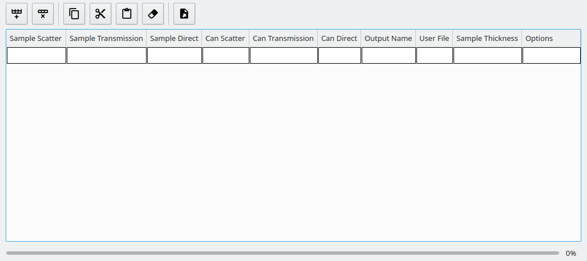
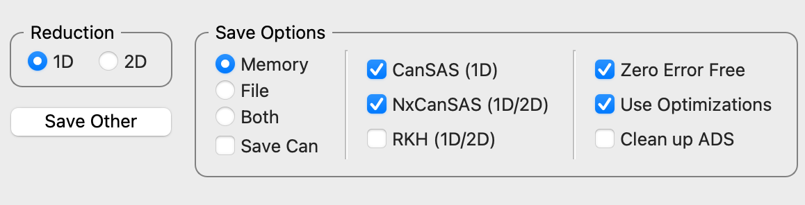

Runs Tab#
The Runs tab is where the majority of processing takes place. You can select your user file, batch file or manually enter data sets for reduction in the data table.
Users can also control how they would like to save their processed data using the Save Options controls, which are described below.

Using the SANS GUI#
All of the data required for a SANS reduction can be entered into this page. First load the appropriate user file, which is usually written by an instrument scientist and contains the settings that relate to a series of runs.
Once the settings file is loaded other pages, documented in other sections, are activated allowing settings to be viewed and edited.
There are two ways of specifying the run numbers to analyze: as single run or batch mode. In batch mode the runs are specified in a text file separated by commas as in the batch mode specification. In both cases the directory in where those run files can be found must be present in Mantid’s “Manage Directories” dialog.
In single run mode the sample run, empty can, transmission file, etc. run numbers are entered into each box.
Next click “Load Data” and an error dialog box will appear if one of the runs is incorrect or its file cannot be found. Once the data is loaded you have the choice of a 1D or 2D reduction.
Once this is complete the name of the results workspace name will be saved into the selected save directory.
Main Controls#
Manage Directories |
Allows a user to select the location of data and mask files |
Load User File |
To select the user file to load and use |
Load Batch File |
Selects a batch file which will pre-populate the table with run numbers |
Process Selected |
Processes the selected row from the table |
Process All |
Processes all rows in the table |
Load |
Loads the run data associated with the selected row from the table |
Table Controls#
{kind=link}

Insert row after |
Adds a row after the currently selected row |
Delete row |
Deletes the selected row |
Copy selected |
Creates a copy of the selected rows |
Cut selected |
Cuts the selected rows |
Paste selected |
Pastes rows from the clipboard |
Clear selected |
Clears the entries from selected rows without deleting them |
Table Columns#
SampleScatter |
Scattering data file or run number to use. This is the only mandatory field |
SampleTrans |
Transmission data file or run number to use |
SampleDirect |
Direct data file or run number to use |
CanScatter |
Scattering datafile or run number for the can run |
CanTrans |
Transmission datafile or run number for can run |
CanDirect |
Direct datafile or run number for can run |
OutputName |
Name of output workspace |
User File |
User file to use for this row. If specified it will override any options set in the GUI, with those set in the specified user file |
Sample Thickness |
Sets the sample thickness to be used in the reduction |
Options |
This column allows the user to provide row specific settings. Currently only WavelengthMin, WavelengthMax, EventSlices (see Settings for details). |
Background Workspace |
This column allows the user to provide a workspace for scaled background subtraction (see below). This can either be the name of a workspace already in the ADS or match the Output Name from another row in the runs table. |
Scale Factor |
Scale factor to be used for scaled background subtraction (see below). |
Scaled Background Subtraction#
Additional hidden columns can be shown on the table by checking the Scaled Background Subtraction checkbox above
the table on the right hand side.
By setting both Background Workspace and Scale Factor a Scaled Background Subtraction will be
performed. Giving these values will perform a background subtraction where the BackgroundWorkspace (representing a
reduced solution run) will be multiplied by the ScaleFactor and then subtracted from the reduced HAB, LAB, or Merged
main output workspace. It is then saved to the ADS or to a file (based on the save options below) in addition to the
normal reduction output. The subtracted workspace will have the same name as the normal output workspace with _bgsub
appended to its name.
Note: The background subtraction workspace will be subtracted in addition to the normal subtraction performed when values are given in the Can columns. If you only wish to subtract the scaled background, leave the can cells blank.
Examples:
Given Values: Sample (Scatter, Transmission, and Direct), and Can (Scatter, Transmission, and Direct)
Output = Sample - Can
Given Values: Sample (Scatter, Transmission, and Direct), Can (Scatter, Transmission, and Direct), and Scaled Background Workspace
Output = Sample - Can
Output_bgsub = Sample - Can - (Background Workspace * Scale Factor)
Given Values: Sample (Scatter, Transmission, and Direct) and Scaled Background Workspace
Output = Sample
Output_bgsub = Sample - (Background Workspace * Scale Factor)
The reduction will fail if only one of Background Workspace and Scale Factor is set. Or, if the reduction mode
is set to “All”. This is because there is no way to determine if the workspace given as the BackgroundWorkspace is
for the HAB or LAB, and so uses the value from the User File, therefore assuming that both reductions have used the same
one.
Using scaled background subtraction when time slicing a sample:
Background workspace not time sliced
The specified Background Workspace will be scaled and subtracted from all sample slices.
You must specify the exact name of the Background Workspace.
It is currently not supported to specify the Background Workspace using an Output Name (from another row in the runs table), although we plan to support this in a future version of Mantid.
Background workspace has been time sliced
A single Background Workspace slice will be scaled and subtracted from all sample slices.
You can specify the Background Workspace slice using its full workspace name.
Alternatively, if the background has been time sliced to match the sample workspace then you can specify the Background Workspace using an Output Name (from another row in the runs table).
This will result in the first background slice being scaled and subtracted from each sample slice
(i.e. for slicing t0_t600, t600_t1200, t1200_t1800, the background slice t0_t600 will be subtracted from each sample slice).
It is not possible to perform a scaled background subtraction where each Background Workspace slice is subtracted from its corresponding sample slice.
Save Options#
{kind=link}

Save Other |
Opens up the save a dialog box Save Other which allows users to manually save processed data |
Save Options - Memory |
Keeps the workspaces in memory, but does not save. |
Save Options - Load |
Saves the workspace to the user’s output directory and removes from memory afterwards |
Save Options - Both |
Saves the workspace to the user’s output directory and keeps it in memory |
CanSAS/NxCanSAS/RKH |
Tick boxes which allow the user to select the file formats to save into |
Zero Error Free |
Ensures that zero error entries get artificially inflated when the data is saved This is beneficial if you wish to load the processed data into different analysis tools |
Use optimizations |
(Strongly Recommended) This will reuse already loaded data rather than reloading it for each run in the table, speeding up processing considerably. |